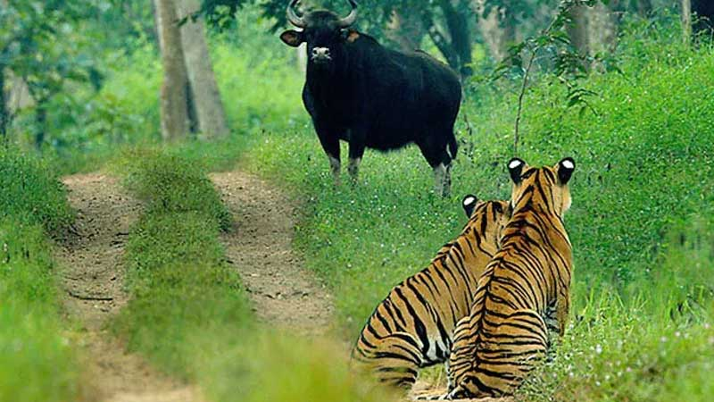

Explore Pollachi
Explore Pollachi


 Pollachi
PollachiExplore the most visited and loved tourist attractions in and around Pollachi.



Handpicked trip plans to experience the best of Pollachi.
 ~ 40 km
~ 40 km
 ~ 28 km
~ 28 km
 ~ 48 km
~ 48 km
 ~ 35 km
~ 35 km
 ~ 24 km
~ 24 km
Discover the places,peoples and lifestyle of pollachi.
search the Place in Pollachi.